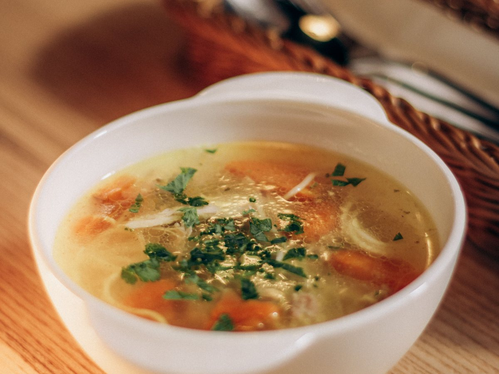
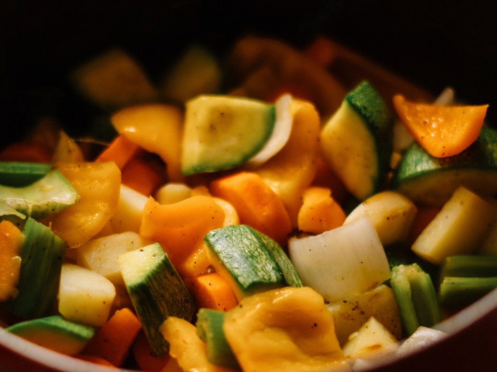
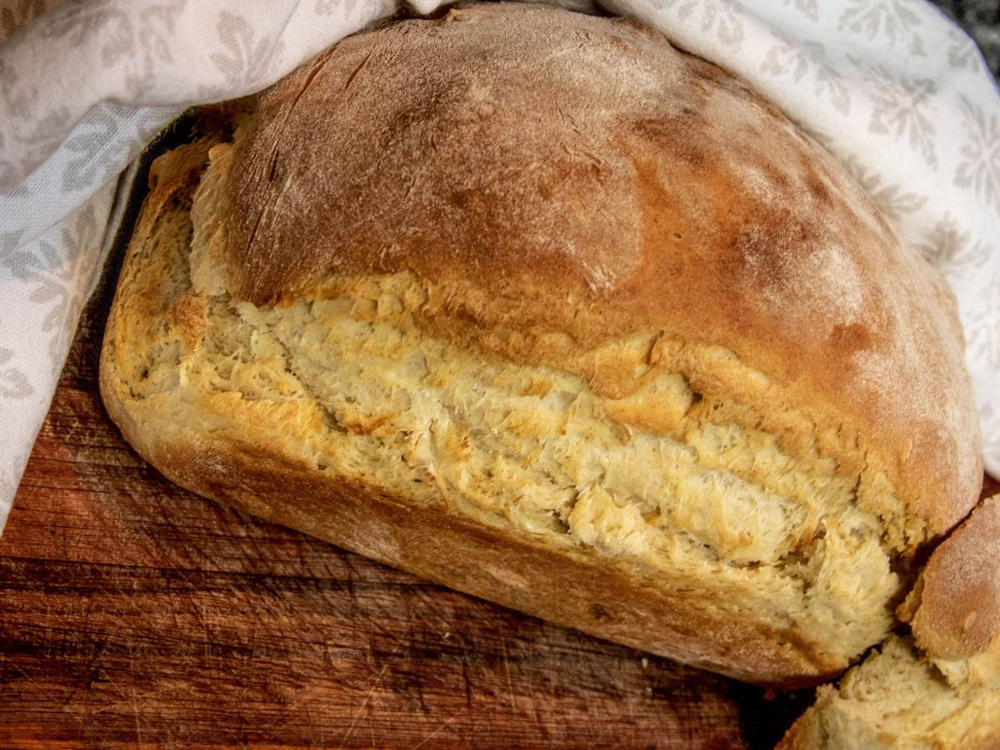
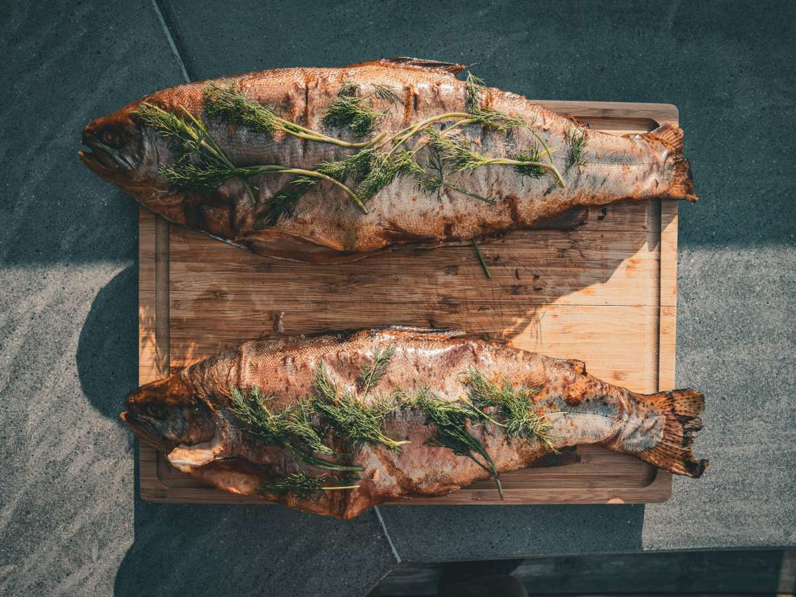
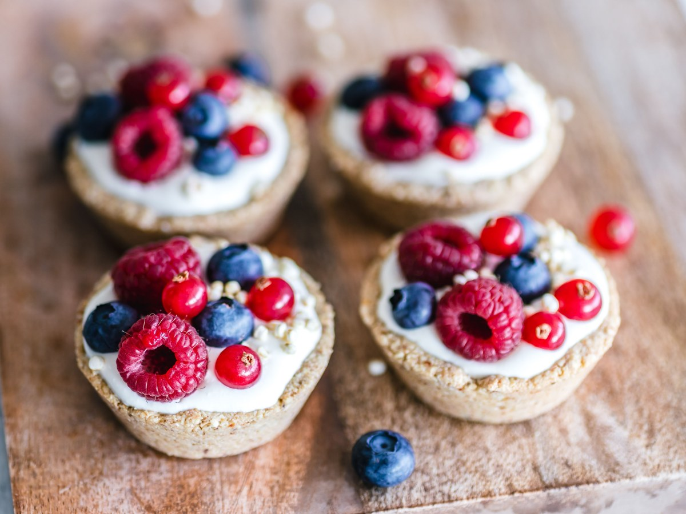
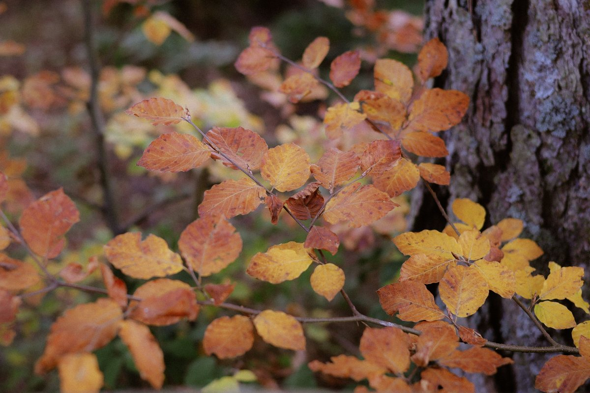
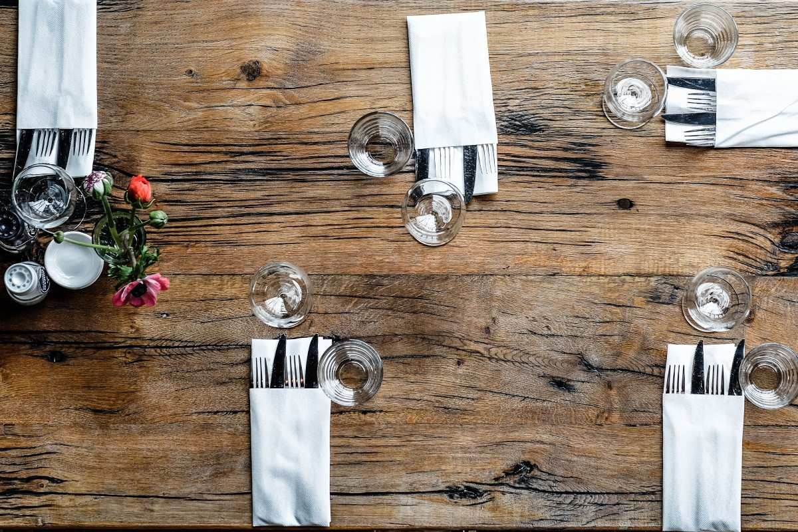
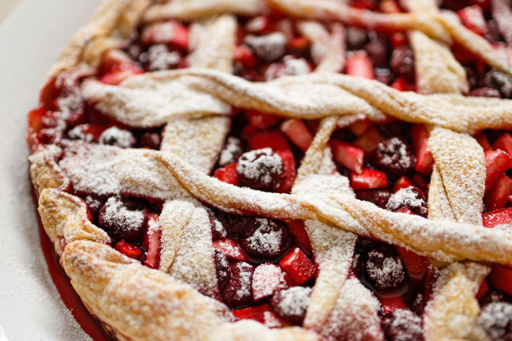
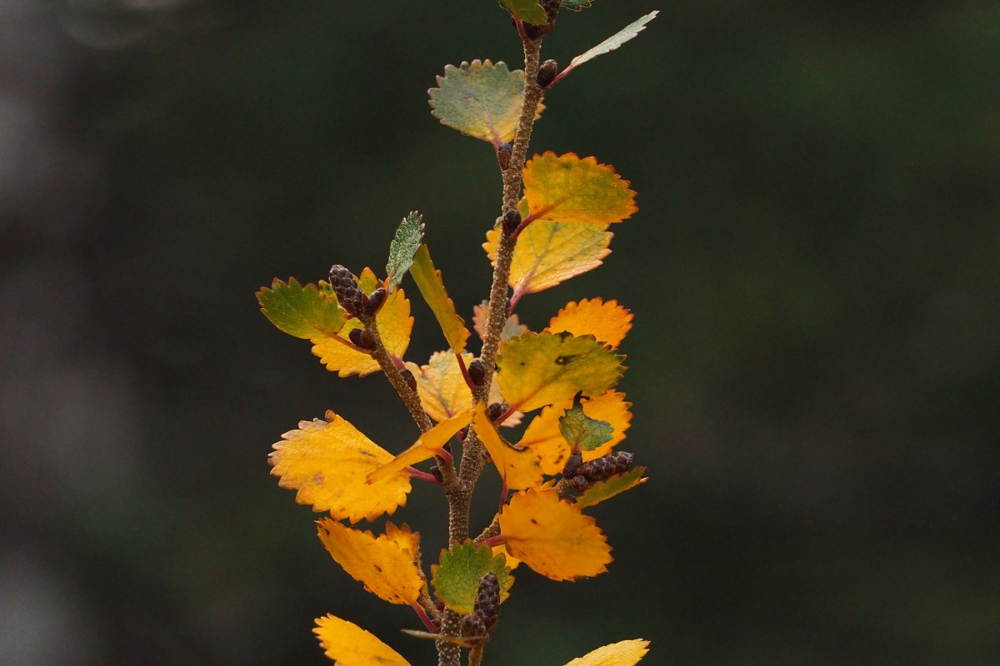

Neltume · Comuna de Panguipulli
Una cazuela caliente en medio del bosque.
Comida casera en Neltume, camino a Huilo Huilo y Puerto Fuy.
- 460reseñas en Google
- 4,9de nota promedio
- 2especialidades: cazuela y vegetariano
- 0páginas propias: sólo redes sociales
La parada antes de seguir
¿Qué hay cerca de Las Lengas?
Neltume es paso obligado hacia el lago Pirihueico.
- 01
Museo de Neltume
Museo y Memoria, en el pueblo.
- 02
Parque Neltume
Bosque a pasos del centro.
- 03
Huilo Huilo
La reserva biológica.
- 04
Puerto Fuy
La barcaza hacia Hua Hum.
Horarios de la barcaza y distancias: consúltelos antes de salir.
Antes de la barcaza, un plato de comida casera.
En Las Lengas S/n, Neltume
Lo que llega a la mesa
-

La especialidad
Cazuelas
Caldo caliente para el frío.
-

Sin carne
Platos vegetarianos
Para todos en la mesa.
-

Para acompañar
Pan amasado
Recién salido.
-

Del sur
Pescado de río
Según temporada.
-

Al final
Postres caseros
Con fruta del bosque.
-
Para seguir viaje
Café
Caliente, antes del camino.
Cazuelas y platos vegetarianos son reales; el resto de la carta lo confirma el restaurante.
460 reseñas y un 4,9.
Escritas por gente que venía de paso
Bosque, leña y mesa
Un almuerzo en Neltume




Fotos de referencia: los platos de verdad los muestra la casa.
Dónde estamos
Las Lengas S/n, Neltume
- Ubicación
- Neltume, comuna de Panguipulli
- +56 9 7397 1150
- Reseñas
- 460 en Google, nota 4,9
- Horario
- Falta el horario
En temporada, consulte antes de llegar con grupos.
Las Lengas S/n, Neltume Abrir en Google Maps
Para el dueño
Qué es real y qué falta
Lo verificado
El nombre, la dirección, el WhatsApp, las 460 reseñas con 4,9, las cazuelas y los platos vegetarianos.
Lo de ejemplo
El resto de la carta y las fotos.
Lo que falta
El horario, si se reserva, medios de pago y fotos de sus platos.